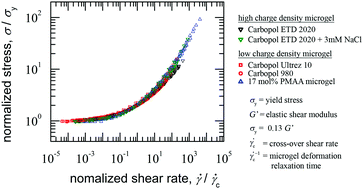
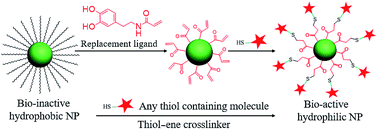
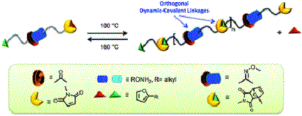
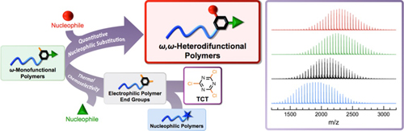
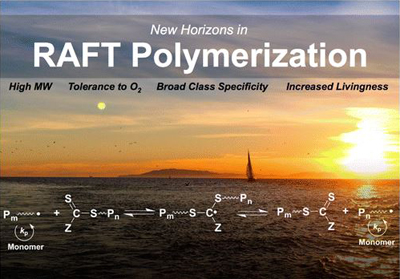
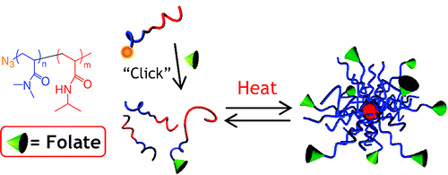

-
Jessica J. Cash, Tomohiro Kubo, Daniel J. Dobbins, Brent S. Sumerlin “Maximizing the symbiosis of static and dynamic bonds in self-healing boronic ester networks” Polymer Chemistry 2018. DOI: 10.1039/C8PY00123E. [Link]
-
Tapomoy Bhattacharjee, Christopher P. Kabb, Christopher S. O’Bryan, Juan M. Urueña, Brent S. Sumerlin, W. Gregory Sawyerac and Thomas E. Angelini “Polyelectrolyte scaling laws for microgel yielding near jamming” Soft Matter 2018, 14, 1559-1570. [Link]

-
C. Adrian Figg, James D. Hickman, Georg M. Scheutz, Sivaprakash Shanmugam, R. Nicholas Carmean, Bryan S. Tucker, Cyrille Boyer , and Brent S. Sumerlin “Color-Coding Visible Light Polymerizations To Elucidate the Activation of Trithiocarbonates Using Eosin Y” Macromolecules 2018. DOI: 10.1021/acs.macromol.7b02533. [Link]
-
Michael B. Sims, Kush Y. Patel, Mallika Bhatta, Soma Mukherjee, and Brent S. Sumerlin “Harnessing imine diversity to tune polymer degradation” Macromolecules 2018, DOI: 10.1021/acs.macromol.7b02323. [Link]
-
Cary A. Kuliasha, Rebecca L. Fedderwitz, Patricia R. Calvo, Brent S. Sumerlin, and Anthony B. Brennan “Engineering the Surface Properties of Poly(dimethylsiloxane) Utilizing Aqueous RAFT Photografting of Acrylate/Methacrylate Monomers” Macromolecules 2018, DOI: 10.1021/acs.macromol.7b02575. [Link]
-
Soma Mukhejee, Jessica, J. Cash, Brent S. Sumerlin “Responsive and Dynamic Covalent Polymers” in Dynamic Covalent Chemistry: Principles, Reactions, and Applications; Zhang, W.; Jin, Y., Eds.;Wiley, Hoboken, NJ, 2018, pp 321-349. [Link]
-
Tomohiro Kubo, Kyle C. Bentz, Kristin C. Powell, C. Adrian Figg, Jeremy L. Swartz, Maxym Tansky, Anuj Chauhan, Daniel A. Savina and Brent S. Sumerlin “Modular and rapid access to amphiphilic homopolymers via successive chemoselective post-polymerization modification” Polymer Chemistry 2017, 8, 6028-6032. [Link]
-
Charles P. Easterling, Tomohiro Kubo, Zachary M. Orr, Gail E. Fanucci and Brent S. Sumerlin “Synthetic upcycling of polyacrylates through organocatalyzed post-polymerization modification” Chemical Science 2017, 8, 7705-7709. [Link]

-
Megan R. Hill, Elise Guégain, Johanna Tran, C. Adrian Figg, Andrew C. Turner†, Julien Nicolas, and Brent S. Sumerlin “Radical Ring-Opening Copolymerization of Cyclic Ketene Acetals and Maleimides Affords Homogeneous Incorporation of Degradable Units” ACS Macro Letters 2017, 6, 1071-1077. [Link]
-
Thomas E. Gartner III, Tomohiro Kubo, Youngmi Seo, Maxym Tansky, Lisa M. Hall, Brent S. Sumerlin, and Thomas H. Epps III “Domain Spacing and Composition Profile Behavior in Salt-Doped Cyclic vs Linear Block Polymer Thin Films: A Joint Experimental and Simulation Study” Macromolecules 2017, 10.1021/acs.macromol.7b01338. [Link]
-
Eva Blasco, Michael B. Sims, Anja S. Goldmann, Brent S. Sumerlin, and Christopher Barner-Kowollik “50th Anniversary Perspective: Polymer Functionalization” Macromolecules 2017, 50, 5215-5252. [Link]
-
Yuan Liu, Weijia Hou, Hao Sun, Cheng Cui, Liqin Zhang, Ying Jiang, Yongxiang Wu, Yanyue Wang, Juan Li, Brent S. Sumerlin, Qiaoling Liu and Weihong Tan “Thiol–ene click chemistry: a biocompatible way for orthogonal bioconjugation of colloidal nanoparticles” Chemical Science 2017, 8, 6182-6187. [Link]

-
William L. A. Brooks, Gertjan Vancoillie, Christopher P. Kabb, Richard Hoogenboom, Brent S. Sumerlin “Triply-Responsive Block Copolymers Combining pH-Responsive, Thermoresponsive, and Glucose-Responsive Behaviors” Journal of Polymer Science, Part A: Polymer Chemistry 2017, 55, 2309-2317. [Link]
-
Christopher S. O’Bryan, Tapomoy Bhattacharjee, Samuel Hart, Christopher P. Kabb, Kyle D. Schulze, Indrasena Chilakala, Brent S. Sumerlin, W. Gregory Sawyer, and Thomas E. Angelini “Self-assembled micro-organogels for 3D printing silicone structures” Science Advances 2017, 10.1126/sciadv.1602800. [Link]
-
Bryan S. Tucker, McKenzie L. Coughlin, C. Adrian Figg, and Brent S. Sumerlin “Grafting-From Proteins Using Metal-Free PET–RAFT Polymerizations under Mild Visible-Light Irradiation” ACS Macro Letters 2017, 6, 452-457. [Link]
-
Xiao Wang, C. Adrian Figg, Xiaoqing Lv, Yongqi Yang, Brent S. Sumerlin, and Zesheng An “Star Architecture Promoting Morphological Transitions during Polymerization-Induced Self-Assembly” ACS Macro Letters 2017, 6, 337-342. [Link]
-
C. Adrian Figg, Ashton N. Bartley, Tomohiro Kubo, Bryan S. Tucker, Ronald K. Castellano and Brent S. Sumerlin “Mild and efficient synthesis of ω,ω-heterodifunctionalized polymers and polymer bioconjugates” Polymer Chemistry 2017, 8, 2457-2461. [Link]
-
Hao Sun, Christopher P. Kabb, Yuqiong Dai, Megan R. Hill, Ion Ghiviriga, Abhijeet P. Bapat and Brent S. Sumerlin “Macromolecular metamorphosis via stimulus-induced transformations of polymer architecture” Nature Chemistry 2017, 9, 817-823. [Link]
-
Jawaher A. Alfurhood, Hao Sun, Christopher P. Kabb, Bryan S. Tucker, James H. Matthews, Hendrik Luesch and Brent S. Sumerlin “Poly(N-(2-hydroxypropyl)methacrylamide)–valproic acid conjugates as block copolymer nanocarriers” Polymer Chemistry 2017, 10.1039/C7PY00196G. [Link]
-
R. Nicholas Carmean, C. Adrian Figg, Georg M. Scheutz, Tomohiro Kubo, and Brent S. Sumerlin “Catalyst-Free Photoinduced End-Group Removal of Thiocarbonylthio Functionality” ACS Macro Letters 2017, 6, 185-189. [Link]
-
C. Adrian Figg, R. Nicholas Carmean, Kyle C. Bentz, Soma Mukherjee, Daniel A. Savin, and Brent S. Sumerlin "Tuning Hydrophobicity To Program Block Copolymer Assemblies from the Inside Out" Macromolecules 2017, 50, 935-943. [Link]
-
R. Nicholas Carmean, Troy E. Becker, Michael B. Sims, Brent S. Sumerlin “Ultra-High Molecular Weights via Aqueous Reversible-Deactivation Radical Polymerization” Chem 2017, 2, 93-101. [Link]
-
Yuqiong Dai, Hao Sun, Sunirmal Pal, Yunlu Zhang, Sangwoo Park, Christopher P. Kabb, Wei David Wei, Brent S. Sumerlin “Near-IR-induced dissociation of thermally-sensitive star polymers” Chemical Science 2017, 8, 1815-1821. [Link]
-
Sunirmal Pal, William L. A. Brooks, Daniel J. Dobbins, and Brent S. Sumerlin "Employing a Sugar-Derived Dimethacrylate to Evaluate Controlled Branch Growth during Polymerization with Multiolefinic Compounds" Macromolecules 2016, 49, 9396-9405. [Link]
-
Gertjan Vancoillie,William Brooks, Maarten Mees, Brent S Sumerlin, Richard Hoogenboom “Synthesis of novel boronic acid-decorated poly(2-oxazoline)s showing triple-stimuli responsive behavior” Polymer Chemistry 2016, 7, 6725-6734. [Link]
-
R. Nicholas Carmean, C. Adrian Figg, Troy E. Becker, and Brent S. Sumerlin “Closed-System One-Pot Block Copolymerization by Temperature-Modulated Monomer Segregation” Angewandte Chemie, International Edition 2016, 55, 8624-8629. [Link]
-
Patricia R. Bachler, Kaitlyn E. Forry, Chelsea A. Sparks, Michael D. Schulz, Kenneth B. Wagener and Brent S. Sumerlin “Modular segmented hyperbranched copolymers” Polymer Chemistry 2016, 7, 4155-4159. [Link]
-
Yanyue Wang, Cuichen Wu, Tao Chen, Hao Sun, Sena Cansiz,Lizin Zhang, Cheng Cui, Weijia Hou, Yuan Wu, Shuo Wan, Ren Cai, Yuan Liu, Brent S Sumerlin, Xiaoping Zhang, Weihong Tan “DNA micelle flares: a study of the basic properties that contribute to enhanced stability and binding affinity in complex biological systems” Chemical Science 2016, 7, 6041-6049. [Link]
-
Hao Sun, Daniel J. Dobbins, Yuqiong Dai, Christopher P. Kabb, Shijian Wu, Jawaher A. Alfurhood, Carlos Rinaldi, Brent S. Sumerlin “Radical Departure: Thermally-Triggered Degradation of Azo-Containing Poly(ß-thioester)s” ACS Macro Letters 2016, 5, 688-693. [Link]
-
Soufiane S. Nadif, Tomohiro Kubo, Stella A. Gonsales, Sudarsan VenkatRamani, Ion Ghiviriga, Brent S. Sumerlin, Adam S. Veige “Introducing “Ynene” Metathesis: Ring-Expansion Metathesis Polymerization Leads to Highly Cis and Syndiotactic Cyclic Polymers of Norbornene” Journal of the American Chemical Society 2016, 138, 6408-6411. [Link]
-
Jawaher A. Alfurhood, Patricia R. Bachler, and Brent S. Sumerlin “Hyperbranched Polymers via RAFT Self-Condensing Vinyl Polymerization” Polymer Chemistry 2016, 7, 3361-3369. [Link]
-
Stella Gonsales, Tomohiro Kubo, Madison Flint, Khalil Abboud, Brent S. Sumerlin, Adam S. Veige “Highly Tactic Cyclic Polynorbornene: Stereoselective Ring Expansion Metathesis Polymerization (REMP) of Norbornene Catalyzed By a New Tethered Tungsten-alkylidene Catalyst” Journal of the American Chemical Society 2016, 138, 4996-4999. [Link]
-
Tomohiro Kubo, C. Adrian Figg, Jeremy L. Swartz, William L. A. Brooks, Brent S. Sumerlin “Multifunctional Homopolymers: Post-Polymerization Modification via Sequential Nucleophilic Aromatic Substitution” Macromolecules 2016, 49, 2077-2084. [Link]
-
Jawaher A. Alfurhood, Hao Sun, Patricia R. Bachler, Brent S. Sumerlin “Hyperbranched Poly(N-(2-Hydroxypropyl) Methacrylamide) via RAFT Self-Condensing Vinyl Polymerization” Polymer Chemistry 2016, 7, 2099-2104. [Link]
-
Soma Mukherjee, William L. A. Brooks, Yuqiong Dai, Brent S. Sumerlin “Doubly-Dynamic-Covalent Polymers Composed of Oxime and Oxanorbornene Links” Polymer Chemistry 2016, 7, 1971-1978. [Link]

-
William L. A. Brooks, Brent S. Sumerlin “Synthesis and Applications of Boronic Acid-Containing Polymers: From Materials to Medicine” Chemical Reviews 2016, 116, 1375-1397. [Link]
-
Jianbo Tan, Hao Sun, Mingguang Yu, Brent S. Sumerlin, and Li Zhang “Photo-PISA: Shedding Light on Polymerization-Induced Self-Assembly” ACS Macro Letters 2015, 4, 1249-1253. [Link]
-
Qijing Chen, Megan R. Hill, William L. A. Brooks, Anqi Zhu,†Brent S. Sumerlin, Zesheng An “Boronic Acid Linear Homopolymers as Effective Emulsifiers and Gelators” ACS Applied Materials & Interfaces 2015, 7, 21668-21672. [Link]
-
Sunirmal Pal, Megan R. Hill, Brent S. Sumerlin “Doubly-Responsive Hyperbranched Polymers with Tunable Reversibility” Polymer Chemistry 2015, 6, 7871-7880. [Link]
-
C. Adrian Figg, Tomohiro Kubo, Brent S. Sumerlin “Efficient and Chemoselective Synthesis of ω,ω-Heterodifunctional Polymers” ACS Macro Letters 2015, 4, 114-118. [Link]

-
Megan R. Hill, R. Nicholas Carmean, Brent S. Sumerlin “Expanding the Scope of RAFT Polymerization: Recent Advances and New Horizons” Macromolecules 2015, 48, 5459-5469. [Link]

-
Christopher P. Kabb,# R. Nicholas Carmean,# Brent S. Sumerlin “Probing the Surface-Localized Hyperthermia of Gold Nanoparticles in a Microwave Field Using Polymeric Thermometers” Chemical Science 2015, 6, 5662-5669. # = Equal contribution from these two authors. [Link]
-
Bryan S. Tucker, Jon D. Stewart, J. Ignacio Aguirre, L. Shannon Holliday, C. Adrian Figg, Jonathan G. Messer, and Brent S. Sumerlin “Role of Polymer Architecture on the Activity of Polymer-Protein Conjugates for the Treatment of Accelerated Bone Loss Disorders” Biomacromolecules 2015, 16, 2374-2381. [Link]
-
Soma Mukherjee, Megan R. Hill, Brent S. Sumerlin “Self-healing Hydrogels Containing Reversible Oxime Crosslinks” Soft Matter 2015, 11, 6152-6161. [Link]
-
Mingsheng Chen, Shaun P. Jensen, Megan R. Hill, Gloria Moore, Zhenli He, Brent S. Sumerlin “Synthesis of amphiphilic polysuccinimide star copolymers for responsive delivery in plants” Chemical Communications 2015, 51, 9694-9697. [Link]
-
Bryan S. Tucker, Stephen G. Getchell, Megan R. Hill, Brent S. Sumerlin "Facile synthesis of drug-conjugated PHPMA core-crosslinked star polymers" Polymer Chemistry 2015, 6, 4258-4263. [Link]
-
Jessica J. Cash, Tomohiro Kubo, Abhijeet P. Bapat, Brent S. Sumerlin “Room-Temperature Self-Healing Polymers Based on Dynamic-Covalent Boronic Esters” Macromolecules 2015, 48, 2098-2106. [Link]
-
Patricia R. Bachler, Michael D. Schulz, Chelsea A. Sparks, Kenneth B. Wagener, Brent S. Sumerlin "Aminobisphosphonate Polymers via RAFT and a Multicomponent Kabachnik–Fields Reaction" Macromolecular Rapid Communications 2015, 36, 828-833. [Link]
-
Megan R. Hill, Elliot J. Mackrell, Carl P. Forsthoefel, Shaun P. Jensen, Mingsheng Chen, Gloria Moore, Zhenli L. He, Brent S. Sumerlin “Biodegradable and pH-Responsive Nanoparticles Designed for Site-Specific Delivery in Agriculture” Biomacromolecules 2015, 16, 1276-1282. [Link]
-
Christopher C. Deng, William L.A. Brooks, Khalil A. Abboud, and Brent S. Sumerlin “Boronic Acid-Based Hydrogels Undergo Self-Healing at Neutral and Acidic pH” ACS Macro Letters 2015, 4, 220-224. [Link]
-
Isidro Cobo, Ming Li, Brent S. Sumerlin, Sébastien Perrier “Making Biomacromolecules Smarter: Instilling Stimuli-Sensitivity to Proteins and Peptides by Conjugation to Responsive Synthetic Polymers” Nature Materials 2015, 14, 143-159 [Link]
-
C. Adrian Figg, Alexandre Simula, Kalkidan Asmelash Gebre,Bryan S. Tucker, David M. Haddleton, Brent S. Sumerlin “Polymerization-induced thermal self-assembly 1 (PITSA)” Chemical Science 2015, 6, 1230-1236. [Link]
-
R. Gurarslan, S. N. Hardrict, D. Roy, C. Galvin, M. R. Hill, H. Gracz, B. S.Sumerlin, J. Genzer, A. E. Tonelli “Beyond Microstructures: Using the Kerr Effect to Characterize the Macrostructures of Synthetic Polymers” Journal of Polymer Science Part B: Polymer Physics 2015, 53, 155-156. [Link]
-
Soma Mukherjee, Abhijeet P. Bapat, Megan R. Hill and Brent S. Sumerlin “Oximes as Reversible Links in Polymer Chemistry: Dynamic Macromolecular Stars” Polymer Chemistry 2014, 5, 6923-693. [Link]
-
Hao Sun, Christopher P. Kabb, Brent S. Sumerlin “Thermally-labile segmented hyperbranched copolymers: Using reversible-covalent chemistry to investigate the mechanism of self-condensing vinyl copolymerization”Chemical Science 2014, 5, 4646-4655. [Link]
-
Fransiska S. H. Krismastuti, William L. A. Brooks, Martin J. Sweetman, Brent S. Sumerlin,* Nicolas H. Voelcker* “A Photonic Glucose Biosensor for Theranostics of Chronic Wounds” J. Mater. Chem. B 2014, 2, 3972-3983. [Link]
-
Jean-François Lutz, Brent S. Sumerlin, Krzysztof Matyjaszewski “Some More Insights on Precisely Controlled Polymer Architectures” Macromolecular Rapid Communications 2014, 35, 377. [Editorial]
-
Jean-François Lutz, Brent Sumerlin, Krzysztof Matyjaszewski “Precisely Controlled Polymer Architectures” Macromolecular Rapid Communications 2014, 35, 122. [Editorial]
-
Bryan S. Tucker and Brent S. Sumerlin “Poly(N-(2-hydroxypropyl) methacrylamide)-Based Nanotherapeutics” Polymer Chemistry 2014, 5, 1566-1572. [Link]
-
Debashish Roy, Brent S. Sumerlin “Let There Be Light: Photo-Crosslinked Block Copolymer Nanoparticles” Macromolecular Rapid Communications 2014, 35, 174-179. [Link]

-
Patrick Theato, Brent S. Sumerlin, Rachel K. O'Reilly, Thomas H. Epps, III "Stimuli responsive materials" Chemistry Society Reviews 2013, 42, 7055-7056 [Editorial] [Link]
-
S. N. Hardrict, R. Gurarslan, C. J. Galvin, H. Gracz, D. Roy, B. S. Sumerlin, J. Genzer, A. E. Tonelli “Characterizing Polymer Macrostructures by Identifying and Locating Microstructures AloWng Their Chains with the Kerr Effect” Journal of Polymer Science Part B: Polymer Physics 2013, 51, 735-741. [Link]
-
Abhijeet P. Bapat, Jacob G. Ray, Daniel A. Savin, and Brent S. Sumerlin “Redox-Responsive Dynamic-Covalent Assemblies: Stars and Miktoarm Stars” Macromolecules 2013, 46, 2188-2198. [Link]
-
Debashish Roy, William L. A. Brooks, Brent S. Sumerlin “New Directions in Thermoresponsive Polymers” Chemical Society Reviews 2013, 42, 7214-7243. [Link]
-
Priyadarsi De, Brent S. Sumerlin “Precision Control of Temperature Response by Copolymerization of Di(ethylene glycol) Acrylate and an Acrylamide Comonomer” Macromolecular Chemistry & Physics 2013, 214, 272-279. [Link]
-
Abhijeet P. Bapat, Jacob G. Ray, Daniel A. Savin, Emily A. Hoff, Derek L. Patton, Brent S. Sumerlin “Dynamic-covalent nanostructures prepared by Diels–Alder reactions of styrene-maleic anhydride-derived copolymers obtained by one-step cascade block copolymerization” Polymer Chemistry 2012, 3, 3112-3120. [Link]
-
Jennifer N.
Cambre, Debashish Roy, Brent S. Sumerlin “Tuning the Sugar-Response of Boronic Acid Block
Copolymers” Journal of Polymer Science
Part A: Polymer Chemistry, 2012, 50, 3373-3382. [Link]
-
Jean-François
Lutz, Shiyong Liu, Brent Sumerlin “Polymer
Science: The Next Generation” Macromolecular Rapid Communications 2012, 33, 721. [Editorial] [Link]
-
Debashish
Roy, Brent S. Sumerlin “Glucose-Sensitivity
of Boronic Acid Block Copolymers at Physiological
pH” ACS Macro Letters 2012, 1, 529-532. [Link]
-
Brent S. Sumerlin "Proteins as Initiators of Controlled Radical Polymerization: Grafting-from via ATRP and RAFT" ACS Macro Letters 2012, 1, 141-145. [Link]
-
Megan R. Hill, Soma Mukherjee, Philip J. Costanzo, Brent S. Sumerlin "Modular Oxime Functionalization of Well-Defined Alkoxyamine-Containing Polymers" Polymer Chemistry 2012, 3, 1758-1762. [Link]
-
William L. A. Brooks, Brent S. Sumerlin "Microwave-Assisted RAFT Polymerization" Israel Journal of Chemistry 2012, 52, 256-263. [special issue in honor of Kris Matyjaszewski's winning the 2011 Wolf Prize.] [Link]
-
Patrick
Wilke, William L. A. Brooks, Romina Kühnle, Brent
Sumerlin, Hans G. Börner "Activity control
of mussel glue derived enzymes: A study on
thermoresponsive tyrosinase-PNIPAM conjugates” In Progress in Controlled Radical
Polymerization: Materials and Applications ACS
Symp. Ser.; Matyjaszewski, K.; Sumerlin, B. S.;
Tsarevsky, N. V., Eds.; ACS: Washington D.C., 2012,
Vol. 1101. pp 271-285. [Link]
-
William L. A. Brooks, Brent S.
Sumerlin "RAFT Polymerization Under
Microwave Heating Conditions" In Progress in Controlled Radical Polymerization:
Mechanisms and Techniques ACS Symp. Ser.;
Matyjaszewski, K.; Sumerlin, B. S.; Tsarevsky, N.
V., Eds.; ACS: Washington D.C., 2012, Vol. 1100. pp
277-291. [Link]
-
Abhijeet P. Bapat, Debashish Roy, Jacob G. Ray, Daniel A. Savin, Brent S. Sumerlin "Dynamic-Covalent Macromolecular Stars with Boronic Ester Linkages" Journal of the American Chemical Society 2011, 133, 19832. [Link]
-
Jennifer N. Cambre, Brent S. Sumerlin "Biomedical Applications of Boronic Acid Polymers" Polymer 2011, 52, 4631-4643. (feature article) [Link]
-
Jan van Hest, Brent Sumerlin "Polymer Bioconjugates" Polymer Chemistry 2011, 2, 1427. [Editorial] [Link]
-
Debashish Roy, Brent S. Sumerlin “Microwave-Assisted
Synthesis of Vinyl Ester Block
Copolymers by RAFT/MADIX Polymerization” Polymer 2011, 52,
3038-3045. [Link]
-
Hongmei Li, Ming Li, Xiao Yu, Abhijeet P.
Bapat, and Brent S. Sumerlin “Block
Copolymer Conjugates Prepared by
Sequentially Grafting from Proteins via
RAFT” Polymer Chemistry 2011, 2, 1531-1535. [Link]
-
Tadeusz Pakula, Kaloian Koynov, Hans
Boerner, Jinyu Huang, Hyung-il Lee, Joanna
Pietrasik, Brent Sumerlin, Krzysztof
Matyjaszewski "Effect of chain
topology on the self-organization and
the mechanical properties of
poly(n-butyl acrylate)-b-polystyrene
block copolymers" Polymer, 2011, 52, 2576-2583. [Link]
-
Ming Li,
Hongmei Li, Priyadarsi De, Brent S.
Sumerlin “Thermoresponsive Block
Copolymer-Protein Conjugates Prepared
by Grafting-From via RAFT
Polymerization“ Macromolecular Rapid Communications 2011, 32, 354-359. [Link]
-
Hongmei Li, Abhijeet P. Bapat, Ming Li,
Brent S. Sumerlin "Protein
conjugation of thermoresponsive
amine-reactive polymers prepared by
RAFT" Polymer Chemistry 2011, 2, 323-327. [Link]

-
Debashish Roy, Jennifer N. Cambre, Brent
S. Sumerlin “Biological- and
Field-Responsive Polymers: Expanding
Potential in Smart Materials” In Handbook
of Stimuli-Responsive Materials,
Urban, M., Ed. Wiley-VCH: Weinheim, 2011,
pp 27-58.
-
Ming
Li, Priyadarsi De, Hongmei Li, Brent S.
Sumerlin "Conjugation of
RAFT-generated polymers to proteins by
two consecutive thiol-ene reactions" Polymer Chemistry 2010, 1,
854-859. [Link]
-
Brent S. Sumerlin and Andrew P. Vogt "Macromolecular
Engineering through Click Chemistry and
Other Efficient Transformations" Macromolecules 2010, 43,
1-13. [Link]
-
Debashish Roy, Jennifer N. Cambre, Brent
S. Sumerlin "Future Perspectives and
Recent Advances in Stimuli-Responsive
Materials" Progress in Polymer
Science 2010, 35,
278-301.[Link]
-
Chang-Uk Lee, Debashish Roy, Brent S.
Sumerlin, Mark D. Dadmun “Facile
Synthesis of Thiol-terminated
Poly(styrene-ran-vinyl phenol) (PSVPh)
Copolymers via Reversible
Addition-Fragmentation Chain Transfer
(RAFT) Polymerization and Their Use in
the Synthesis of Gold Nanoparticles with
Controllable Hydrophilicity” Polymer 2010, 51, 1244-1251. [Link]

-
Stephen G. Boyes, Misty D. Rowe, C.-C
Chang, D. H. Thamm, S. L. Kraft, J. F.
Harmon, N. J. Serkova, Andrew P. Vogt,
Brent S. Sumerlin. “Surface
Modification of Positive Contrast
Nanoparticle Agents with RAFT Polymers
Towards the Targeted Imaging and
Treatment of Cancer” in Polymeric
Delivery of Therapeutics; Morgan,
S.E. and Lochhead, R.Y Eds.; ACS Symp.
Series, Vol. 1053; American Chemical
Society: Washington, DC, 2010,
65-101. [Link]
-
Debashish Roy, Aman Ullah, Brent S.
Sumerlin "Rapid Block Copolymer
Synthesis by Microwave-Assisted RAFT
Polymerization" Macromolecules 2009, 42, 7701-7708. [Link]
-
Priyadarsi De, Sudershan R. Gondi,
Debashish Roy, Brent S. Sumerlin "Boronic
Acid Terminated Polymers: Synthesis by
RAFT and Subsequent Dynamic Covalent
Self-Assembly" Macromolecules 2009, 42, 5614–5621. http://dx.doi.org/10.1021/ma900835y Free link: [Link]
-
Debashish
Roy, Jennifer N. Cambre, Brent S. Sumerlin "Triply-responsive boronic acid block
copolymers: Solution self-assembly
induced by changes in temperature, pH,
or sugar concentration" Chemical
Communications 2009,
2106-2108. http://dx.doi.org/10.1039/B900374F
-
Andrew P. Vogt, Brent S. Sumerlin "Temperature and redox responsive hydrogels from ABA triblock copolymers prepared by RAFT polymerization" Soft Matter 2009, 5, 2347-2351. http://dx.doi.org/10.1039/b817586a
-
Misty D. Rowe, Chia-Chih Chang,
Douglas H. Thamm, Susan L. Kraft, Joseph
F. Harmon, Jr., Andrew P. Vogt, Brent S.
Sumerlin, Stephen G. Boyes "Tuning
the Magnetic Resonance Imaging
Properties of Positive Contrast Agent
Nanoparticles by Surface Modification
with RAFT Polymers" Langmuir 2009, 25, 9487–9499. http://dx.doi.org/10.1021/la900730b
-
Jean-Francois
Lutz, Brent S. Sumerlin “The Role of Click
Chemistry in Polymer Synthesis” In Click Chemistry for Biotechnology and Materials
Science, Lahann, J., Ed. Wiley-VCH: Weinheim,
2009
-
Andrew
P. Vogt, Brent S. Sumerlin “Tuning the
Temperature Response of Branched Poly(N-Isopropylacrylamide)
Prepared by RAFT Polymerization” Macromolecules 2008, 41, 7368–7373. http://dx.doi.org/10.1021/ma801256k
-
Priyadarsi
De, Ming Li, Sudershan R. Gondi, Brent S.
Sumerlin "Temperature-Regulated
Activity of Responsive Polymer-Protein
Conjugates Prepared by Grafting-from via
RAFT Polymerization" Journal of
the American Chemical Society 2008, 130, 11288–11289. http://dx.doi.org/10.1021/ja804495v
-
Jagannath Dey, Hao Xu, Jinhui
Shen, Paul, Thevenot, Sudershan R.
Gondi, Kytai T. Nguyen, Brent S.
Sumerlin, Liping Tang, Jian Yang “Development
of biodegradable crosslinked
urethane-doped polyester elastomers” Biomaterials 2008, 29, 4637–4649. http://dx.doi.org/ 10.1016/j.biomaterials.2008.08.020 10.1016/j.biomaterials.2008.08.020
-
Ming
Li, Priyadarsi De, Sudershan R. Gondi,
Brent S. Sumerlin “End Group
Transformations of RAFT-Generated
Polymers with Bismaleimides: Functional
Telechelics and Modular Block
Copolymers” J. Polym. Sci. Part
A: Polym. Chem. 2008, 46,
5093-5100. http://dx.doi.org/10.1002/pola.22837
-
Sergei
Sheiko, Brent S. Sumerlin, Krzysztof
Matyjaszewski "Cylindrical molecular
brushes: Synthesis, characterization,
and properties" Progress in
Polymer Science 2008, 33,
759-785.
http://dx.doi.org/10.1016/j.progpolymsci.2008.05.001
-
Debashish
Roy, Jennifer N. Cambre, Brent S. Sumerlin "Sugar-Responsive Block Copolymers by
Direct RAFT Polymerization of
Unprotected Boronic Acid Monomers" Chemical
Communications 2008, 2477-2479. http://dx.doi.org/10.1039/b802293c
-
Ming
Li, Priyadarsi De, Sudershan R. Gondi,
Brent S. Sumerlin "Responsive
Polymer-Protein Bioconjugates Prepared
by RAFT Polymerization and
Copper-Catalyzed Azide-Alkyne Click
Chemistry" Macromolecular Rapid
Communications 2008, 29,
1172-1176. http://dx.doi.org/10.1002/marc.200800073
Highlighted in
the June 2008
edition of Materials View.
-
Charles
L. McCormick,* Brent S. Sumerlin,* Brad S.
Lokitz, Jonathan E. Stempka "RAFT-Synthesized
Diblock and Triblock Copolymers:
Thermally-Induced Supramolecular
Assembly in Aqueous Media" Soft
Matter 2008, 4,
1760-1773. http://dx.doi.org/10.1039/b719577j
-
K. B.
Guice, S. R. Marrou S. Gondi, B. S.
Sumerlin, Y. -L. Loo “pH Response of
Hydrogels of Diblock and Triblock
Copolymers containing Polystyrene and
Poly(2-hydroxyethyl
methacrylate-co-2-dimethylaminoethyl
methacrylate)” Macromolecules 2008, 41, 4390-
4397
. http://dx.doi.org/10.1021/ma8003746
-
Priyadarsi De,
Sudershan R. Gondi, Brent S. Sumerlin "Folate-Conjugated
Thermoresponsive Block Copolymers:
Highly Efficient Conjugation and
Solution Self-Assembly" Biomacromolecules 2008, 9, 1064-1070. http://dx.doi.org/10.1021/bm701255v

-
Jennifer N. Cambre,
Debashish Roy, Sudershan R. Gondi, Brent
S. Sumerlin "Facile Strategy to
Well-Defined Water-Soluble Boronic
Acid (Co)polymers" Journal
of the American Chemical Society 2007, 129, 10348-10349. http://dx.doi.org/10.1021/ja074239s
-
Andrew P. Vogt,
Sudershan R. Gondi, Brent S. Sumerlin "Hyperbranched
Polymers via RAFT Copolymerization of
an Acryloyl Trithiocarbonate" Australian
Journal of Chemistry 2007, 60, 396-399 (Invited). http://dx.doi.org/10.1071/CH07077
-
Patricia
L. Golas, Nicolay V. Tsarevsky, Brent S.
Sumerlin, Krzysztof Matyjaszewski "Multisegmented
Block Copolymers by “Click” Coupling
of Polymers Prepared by ATRP" Australian Journal of Chemistry 2007, 60, 400-404. http://dx.doi.org/10.1071/CH07073
-
Sudershan R. Gondi,
Andrew P. Vogt, Brent S. Sumerlin "Versatile
Pathway to Functional Telechelics via
RAFT Polymerization and Click
Chemistry" Macromolecules 2007, 40, 474-481. http://dx.doi.org/10.1021/ma061959v
-
Joanna Pietrasik, Brent S.
Sumerlin, Robert Y. Lee, Krzysztof
Matyjaszewski "Solution Behavior
of Temperature-Responsive Molecular
Brushes Prepared by ATRP" Macromol. Chem.
Phys. 2007, 208, 30–36. http://dx.doi.org/10.1002/macp.200600442
-
Joanna Pietrasik, Brent S.
Sumerlin, Hyung-il Lee, Roberto R.
Gil, Krzysztof Matyjaszewski "Structural mobility of molecular
bottle-brushes investigated by NMR
relaxation dynamics" Polymer 2007, 48, 496-501. http://dx.doi.org/10.1016/j.polymer.2006.11.057
-
Sumerlin,
B. S.; Matyjaszewski, K., “Molecular
brushes-densely grafted copolymers” In Macromolecular Engineering,
Matyjaszewski, K.; Gnanou, Y.; Leibler,
L., Eds. Wiley-VCH: Weinheim, 2007; Vol.
2, pp 1103-1135.
-
Andrew P. Vogt,
Brent S. Sumerlin "An Efficient
Route to Macromonomers via ATRP and
Click Chemistry" Macromolecules 2006, 39, 5286-5292. http://dx.doi.org/10.1021/ma0610461
-
Patricia L. Golas,
Nicolay V. Tsarevsky, Brent S. Sumerlin,
Krzysztof Matyjaszewski "Catalyst
Performance in "Click" Coupling
Reactions of Polymers Prepared by
ATRP: Ligand and Metal Effects" Macromolecules 2006, 39, 6451-6457. http://dx.doi.org/10.1021/ma061592u
-
Robert
E. Richard, Marlene Schwarz, Shrirang
Ranade, A. Ken Chan, Krzysztof
Matyjaszewski, Brent Sumerlin "Acrylate-Based Block Copolymers
Prepared by Atom Transfer Radical
Polymerization as Matrices for Drug
Delivery Applications" In Controlled/Living
Radical Polymerization: From Synthesis
to Materials ACS Symp. Ser.; ACS:
Washington D.C., 2006, Vol. 944.
-
Brent
S. Sumerlin, Nicolay V. Tsarevsky,
Haifeng Gao, Patricia Golas, Guillaume
Louche, Robert Y. Lee, and Krzysztof
Matyjaszewski "Click Functionalization
of Well-Defined Copolymers Prepared by
Atom Transfer Radical Polymerization" In Controlled/Living Radical
Polymerization: From Synthesis to
Materials ACS Symp. Ser.; ACS:
Washington D.C., 2006, Vol. 944.
-
Robert E. Richard,
Marlene Schwarz, Shrirang Ranade, A. Ken
Chan, Krzysztof Matyjaszewski, and Brent
Sumerlin "Evaluation of
Acrylate-Based Block Copolymers
Prepared by Atom Transfer Radical
Polymerization as Matrices for
Paclitaxel Delivery from Coronary
Stents" Biomacromolecules 2005, 6, 3410-3418. http://dx.doi.org/10.1021/bm050464v
-
Haifeng Gao,
Guillaume Louche, Brent S. Sumerlin,
Nazeem Jahed, Patricia Golas, Krzysztof
Matyjaszewski "Gradient Polymer
Elution Chromatographic Analysis of a,w-Dihydroxypolystyrene
Synthesized via ATRP and Click
Chemistry" Macromolecules 2005, 38, 8979-8982. http://dx.doi.org/10.1021/ma051566g
-
Brent S. Sumerlin,
Nicolay V. Tsarevsky, Guillaume Louche,
Robert Y. Lee, Krzysztof Matyjaszewski "Highly
Efficient "Click" Functionalization of
Poly(3-azidopropyl methacrylate)
Prepared by ATRP" Macromolecules, 2005; 38, 7540-7545. http://dx.doi.org/10.1021/ma0511245
-
Nicolay V.
Tsarevsky, Brent S. Sumerlin, and
Krzysztof Matyjaszewski. "Step
Growth 'Click' Coupling of Telechelic
Polymers Prepared by Atom Transfer
Radical Polymerization" Macromolecules 2005, 38, 3558-3561. http://dx.doi.org/10.1021/ma050370d
-
Brent S. Sumerlin,
Dorota Neugebauer, Krzysztof
Matyjaszewski. "Initiation
Efficiency in the Synthesis of
Molecular Brushes by Grafting from via
Atom Transfer Radical Polymerization" Macromolecules 2005, 38,
702-708. http://dx.doi.org/10.1021/ma048351b
-
Krzysztof
Matyjaszewski; James Spanswick; Brent S. Sumerlin “Preparation, Characterization, and
Applications of Polymers Synthesized by Atom
Transfer Radical Polymerization.” In Living and Controlled Polymerization: Synthesis,
Characterization and Properties of the Respective
Polymers and Copolymers, Jagur-Grodzinski, J.,
Ed. Nova Science: 2005.
-
Charles W.
Scales; Anthony J. Convertine; Brent S. Sumerlin;
Andrew B. Lowe; Charles L. McCormick “Synthesis of terminally functionalized (Co)polymers
via reversible addition fragmentation chain transfer
polymerization and subsequent immobilization to
solid surfaces with potential biosensor
applications.” In Stimuli-Responsive
Polymeric Films and Coatings. ACS Symp. Ser.;
ACS: Washington D.C., 2005, Vol. 912.
-
Dorota Neugebauera,
Brent S. Sumerlin, Krzysztof
Matyjaszewski, Benjamin Goodhart, Sergei
S. Sheiko "How dense are cylindrical
brushes grafted from a multifunctional
macroinitiator?" Polymer 2004, 45, 8173--8179. http://dx.doi.org/10.1016/j.polymer.2004.09.069
-
Brent S. Sumerlin,
Andrew B. Lowe, David B. Thomas, Anthony
J. Convertine, Michael S. Donovan,
Charles L. McCormick "Aqueous
solution properties of pH-responsive
AB diblock acrylamido-styrenic
copolymers synthesized via aqueous
reversible addition-fragmentation
chain transfer" Journal of
Polymer Science Part A: Polymer
Chemistry 2004, 42,
1724-1734. http://dx.doi.org/10.1002/pola.11069
-
Andrew B. Lowe,
Brent S. Sumerlin, Charles L. McCormick “The Direct Polymerization of
2-Methacryloxyethyl Glucoside via
Aqueous Reversible
Addition-Fragmentation Chain Transfer
Polymerization” Polymer 2003, 44, 6761. http://dx.doi.org/10.1016/j.polymer.2003.08.039
-
Anthony J.
Convertine, Brent S. Sumerlin, David B.
Thomas, Andrew B. Lowe, Charles L.
McCormick “Synthesis of Block
Copolymers of 2- and 4-Vinylpyridine
by RAFT Polymerization” Macromolecules 2003, 36, 4679. http://dx.doi.org/10.1021/ma034361l
-
Brent S. Sumerlin,
Andrew B. Lowe, Paul A. Stroud, Charles
L. McCormick “Modification of Gold
Surfaces with Water-Soluble
(Co)polymers prepared via Aqueous
Reversible Addition-Fragmentation
Chain Transfer (RAFT) Polymerization” Langmuir 2003, 19,
5559. http://dx.doi.org/10.1021/la034459t
-
Brent S. Sumerlin,
Andrew B. Lowe, David B. Thomas, Charles
L. McCormick “Aqueous Solution
Properties of pH-Responsive AB Diblock
Acrylamido Copolymers Synthesized via
Aqueous RAFT” Macromolecules 2003, 36, 5982. http://dx.doi.org/10.1021/ma034088n
-
David B. Thomas,
Brent S. Sumerlin, Andrew B. Lowe,
Charles L. McCormick “Conditions for
Facile, Controlled RAFT Polymerization
of Acrylamide in Water” Macromolecules 2003, 36, 1436. http://dx.doi.org/10.1021/ma025960f
-
Andrew
B. Lowe, Brent S. Sumerlin, Michael S.
Donovan, David B. Thomas, Pierre
Hennaux, Charles L. McCormick “RAFT
Polymerization in Homogeneous Aqueous
Media” In Advances in Controlled Radical
Polymerizations. ACS Symp. Ser.; ACS:
Washington D.C., 2003; Vol. 854.
-
Andrew B. Lowe,
Brent S. Sumerlin, Michael S. Donovan,
Charles L. McCormick “Facile
Preparation of Transition Metal
Nanoparticles Stabilized by
Well-defined (Co)polymers Synthesized
via Aqueous RAFT” Journal of
the American Chemical Society 2002, 124, 11562. http://dx.doi.org/10.1021/ja020556h
-
Michael S. Donovan,
Brent S. Sumerlin, Andrew B. Lowe,
Charles L. McCormick “Controlled
Polymerization of Sulfobetaine
Monomers Directly in Aqueous Media via
RAFT” Macromolecules 2002, 35, 8663. http://dx.doi.org/10.1021/ma0209996
-
Michael S. Donovan,
Andrew B. Lowe, Brent S. Sumerlin,
Charles L. McCormick “RAFT
Polymerization of N,N-Dimethylacrylamide
in Water” Macromolecules 2002, 35, 4570. http://dx.doi.org/10.1021/ma020191l
-
Michael S. Donovan,
Andrew B. Lowe, Brent S. Sumerlin,
Charles L. McCormick “RAFT
Polymerization of N,N-Dimethylacrylamide
Utilizing Novel Chain Transfer Agents
Tailored for High Reinitiation
Efficiency and Structural Control” Macromolecules 2002, 35,
4123. http://dx.doi.org/10.1021/ma0120714
-
Brent S. Sumerlin,
Michael S. Donovan, Yoshiro Mitsukami,
Andrew B. Lowe, Charles L. McCormick “Water-Soluble
Polymers. 84. Controlled
Polymerization in Aqueous Media of
Anionic Acrylamido Monomers via RAFT” Macromolecules 2001, 34, 6561. http://dx.doi.org/10.1021/ma011288v
Books Edited
-
Fundamentals of Controlled/Living Radical Polymerization; Tsarevsky, N.; Sumerlin, B. S., Eds.; Royal Society of Chemistry: Cambridge, U.K., 2013
-
Progress in Controlled Radical
Polymerization: Materials and Applications;
Matyjaszewski, K., Sumerlin, B. S., Tsarevsky, N.
V., Eds.; ACS Symposium Series 1101; American
Chemical Society: Washington, DC, 2012.
-
Progress in Controlled Radical
Polymerization: Mechanisms and Techniques;
Matyjaszewski, K., Sumerlin, B. S., Tsarevsky, N.
V., Eds.; ACS Symposium Series 1100; American
Chemical Society: Washington, DC, 2012.
Patents
-
Andrew
B. Lowe, Brent S. Sumerlin and Charles
L. McCormick. Preparation of Transition
Metal Nanoparticles and Surfaces
Modified (Co)Polymers Synthesized by
RAFT US 7417096.
-
Krzysztof
Matyjaszewski; Brent S. Sumerlin;
Nicolay Tsarevsky; James Spanswick.
Preparation of tetrazole polymers with
controlled functionality for
pharmaceutical use. WO 2005087818.
-
Charles
L. McCormick, Michael S. Donovan, Andrew
B. Lowe, Brent S. Sumerlin, David B.
Thomas “Chain Transfer Agents for RAFT
Polymerization in Aqueous Media” US
6855840.
-
Charles
L. McCormick, Michael S. Donovan, Andrew
B. Lowe, Brent S. Sumerlin, David B.
Thomas “Chain Transfer Agents for RAFT
Polymerization in Aqueous Media” US
7179872.
-
Charles
L. McCormick, Michael S. Donovan, Andrew
B. Lowe, Brent S. Sumerlin, David B.
Thomas “Chain Transfer Agents for RAFT
Polymerization in Aqueous Media” US
7186786.
-
Andrew
B. Lowe, Brent S. Sumerlin, Charles L.
McCormick “Polymer Functionalized Noble
Metal Nanoparticles” US 7138468.
|